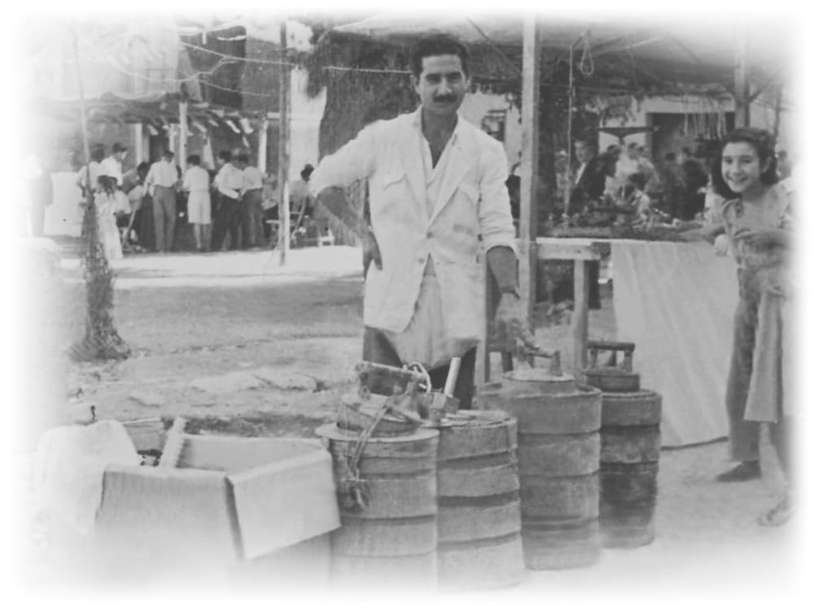

No es casualidad que la mayoría de la población de Jijona de finales del siglo XIX, aparte de la fabricación del turrón, a la que ya se dedicaba desde el siglo XIV, empezara la práctica de un nuevo oficio, el de heladero. Por aquel entonces, su población explotaba unos antiguos neveros ubicados en la sierra de la Carrasqueta, para transportar alimentos de manera refrigerada, con la nieve que acumulaban en ellos durante las épocas de invierno. Este privilegio, sirvió como detonante, para que sus gentes se inmiscuyeran en este oficio, ya que disponían de la materia imprescindible para su elaboración, el frío.
Luis, nace con esas primeras nieves en Jijona, en 1926. A sus 14 años hace su toma de contacto con el mundo del helado, trabajando durante 4 temporadas para José Cortés, en Helados la Valenciana, de Utrera. En el 44 se desplaza a Oviedo, donde trabaja un solo año en casa de Diego Verdú. Y es ya en el 45, cuando junto con su hermano Pepe, comienzan sus andadas como propietarios.
Permanecerán en esta ciudad, de temporada en temporada, junto a otros miembros de la familia como su otro hermano, Guillermo y su padre Pepe, hasta 1951. Como otros heladeros de la época, su sistema de trabajo era, elaborar a primeras horas de la mañana, para salir posteriormente a vender, bien situándose en puntos de paso de gente con el típico carrito de helados de la época, o desplazándose a ferias o mercadillos de posibles pueblos cercanos, transportando el helado en depósitos denominados "corchos", de considerable volumen. El negocio pasó de llamarse "La Flor de Valencia", a "la Jijonenca" en el año 51.
En 1952, en su afán por buscar otros lugares más comerciales, hacen temporada en Alcantarilla, pero no llegan a concluirla, dado su escaso éxito. De nuevo emprenden la búsqueda, esta vez con referencias de unos vecinos y por fin se establecen definitivamente, en un Benidorm del año 1954. Al poco tiempo y después de independizarse Luis de su hermano, nace la marca que perdura hasta hoy, Helados Sirvent Benidorm.
El sistema sigue siendo la venta con carros, la cual se amplía con un local, en 1958 en la calle José Antonio (donde se ubica el obrador hasta el año 1970 que pasa a la calle Asunción y desde allí será el punto de fabricación y reparto), otro en 1962 en la playa de Levante y el último hasta la fecha, en la Playa de la Cala de Benidorm en el año 1967.
En los años 80 toman el rumbo de la empresa Alberto, Guillermo y José Luis, continuando los pasos de su padre. Desde el año 1996, disponemos de unas instalaciones para fabricación, de unos 1000mtrs en la vecina población de Finestrat, desde donde abastecemos tanto a nuestras heladerías, como a otros clientes de la zona, que confían en nuestro saber hacer y la calidad artesana de nuestros productos.
Tres generaciones elaborando helados con recetas secretas familiares.
Chufa de Alboraya seleccionada y turrón de Jijona de primera calidad.